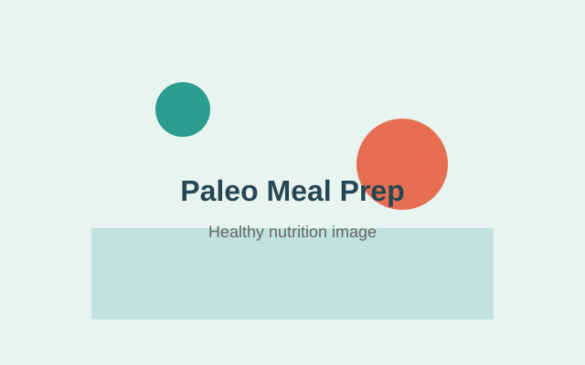

Paleo Diet Basics: What You Need to Know to Get Started
Quick Navigation: What is Paleo | Foods to Eat | Foods to Avoid | Benefits | Transition | Tips | FAQ | Back to PaleoHQ Home
What is the Paleo Diet?
The paleo diet, also called the paleolithic diet, is based on eating whole foods that our ancestors ate thousands of years ago. This approach focuses on natural, unprocessed foods and eliminates modern processed products. Understanding paleo diet basics is essential before you start, and paleo meal prep for beginners will help you maintain consistency.

The paleo diet eliminates grains, legumes, and dairy products that were introduced after agriculture began. This dietary approach has gained significant popularity among health-conscious individuals seeking natural nutrition.
Foods to Eat on the Paleo Diet
When following a paleo diet, focus on whole foods that are nutrient-dense and minimally processed. The paleo diet basics include eating meat, fish, vegetables, fruits, and healthy fats.
- Proteins: Grass-fed beef, wild-caught fish, poultry, eggs
- Vegetables: Broccoli, spinach, carrots, zucchini, mushrooms, peppers
- Fruits: Berries, apples, oranges, bananas, grapes
- Healthy fats: Coconut oil, olive oil, avocado, nuts, seeds
- Seasonings: Sea salt, pepper, herbs, spices
These paleo foods provide complete nutrition and support your body's natural functions.
Foods to Avoid on the Paleo Diet
The paleo diet eliminates several modern food categories that didn't exist during paleolithic times. Understanding what to avoid is crucial for success.
| Food Category | Why Avoid | Modern Examples |
|---|---|---|
| Grains | Contains gluten and lectins | Wheat, rice, oats, bread |
| Legumes | Inflammatory compounds | Beans, lentils, peanuts |
| Dairy | Not available in paleolithic era | Milk, cheese, yogurt |
| Processed foods | Contains additives and preservatives | Packaged snacks, fast food |
| Refined sugars | Causes blood sugar spikes | Candy, soda, desserts |
Benefits of Following a Paleo Diet
Many people experience significant health improvements when following paleo diet basics consistently. The benefits include increased energy, better digestion, weight loss, and reduced inflammation.
Once you master paleo diet fundamentals, you can progress to organizing paleo meal prep to maintain your dietary goals throughout the week.
Transitioning to a Paleo Lifestyle
Starting the paleo diet can feel overwhelming, but taking gradual steps makes it manageable. Begin by removing the most problematic foods first, then slowly introduce paleo alternatives.
- Week 1: Remove processed foods and refined sugars
- Week 2: Eliminate grains and bread products
- Week 3: Remove dairy from your diet
- Week 4: Optimize your meals with whole food focus
Tips for Success with the Paleo Diet
Following paleo diet basics successfully requires planning and preparation. Here are practical tips for maintaining the diet long-term.
- Plan meals ahead using meal prep strategies
- Read food labels to identify hidden grains and sugars
- Connect with paleo communities for support and recipes
- Focus on whole foods rather than paleo substitutes
- Listen to your body and adjust as needed
FAQ
Conclusion
Understanding paleo diet basics is the foundation for a successful transition to this nutritional approach. By focusing on whole foods and eliminating processed products, you can achieve better health and sustained energy. Once you understand these paleo diet fundamentals, implementing effective meal prep strategies will help you maintain your commitment and see long-term results. Start with these paleo diet basics today and transform your relationship with food.